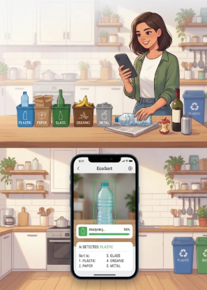

↑
Take a photo
Choose a picture of the item you want to sort.
Turn everyday waste into a better future. Let artificial intelligence help you recognize materials, sort correctly, and make a positive impact on our planet.

Good decisions begin with knowing what to do. EcoSort AI brings useful sorting guidance into one friendly place.
Choose a picture of the item you want to sort.
Our scanner helps determine the item's likely material category.
Get practical guidance on reuse, recycling, or proper disposal.